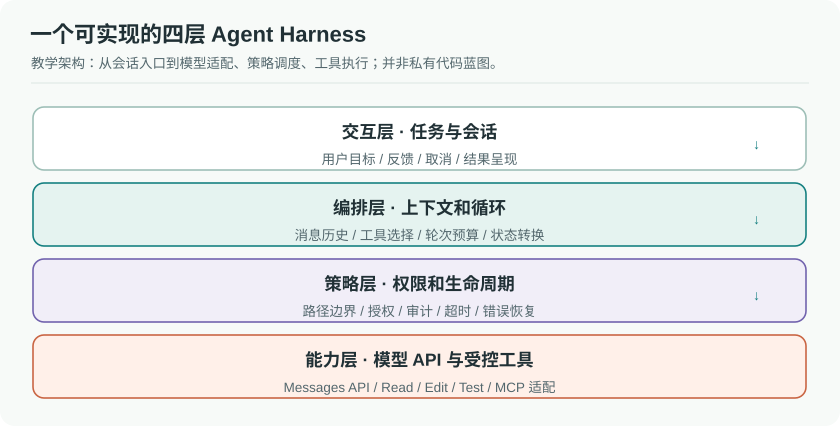
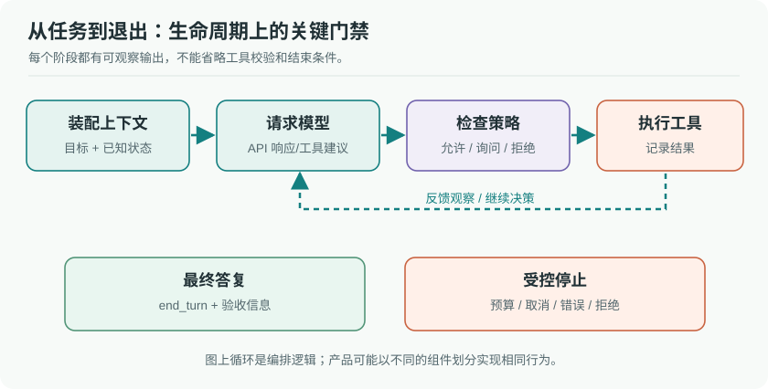

Claude Code 的公开能力与 Harness 分层
不把“可能的内部结构”写成事实。用官方可核查的功能、清晰的接口契约与四层教学架构解释 Coding Agent 如何组织模型、工具、策略和状态。
为什么“列七个组件”不等于架构分析
观察到一个 Coding Agent 能读文件、修改代码并运行测试，并不能推出它的内部实现一定由固定的七个服务、四级队列或十二层 Prompt 组成。不同软件架构可以产生相同的外部行为。因此本章不声称提供 Claude Code 私有源码逐行拆解，而是做一件可验证的事：从公开需求反推最小职责，并构造一套可以亲自实现和测试的 Harness 分层。
架构分析有两个问题必须分开：产品支持什么（可由官方文档证实）以及我们如何实现相似能力（是教学设计）。
四层模型：每层解决一类难题

| 层 | 输入与输出 | 需要守住的不变量 |
|---|---|---|
| 交互 | 用户任务 → 已确认的范围与呈现 | 能取消任务，明确告知完成/失败 |
| 编排 | 消息历史 → 下一轮模型请求 | 工具调用与结果顺序完整、轮次有上界 |
| 策略 | 行动建议 → 允许/拒绝/请求批准 | 无论模型如何表述，越权操作不可直接执行 |
| 能力 | 结构化参数 → 模型消息或受控工具结果 | 严格校验参数、超时、错误反馈 |
在真实项目中，策略通常横跨多层而非物理上被限制在一层。这里的“层”是职责边界，便于推理与单元测试，不能直接对应进程数量。
把一次真实任务展开成数据流
假设任务是“在仓库中修复一个 failing test”。编排层负责构造消息、读取之前的工具结果并发起模型请求；模型返回请求读取文件或运行测试的结构化提议；策略层检查这些动作是否被允许；能力层产生真实输出或错误；编排层再将输出送回模型。

这个设计有利于建立日志：为每次模型请求记录轮次、响应类别、工具名、批准决定、时长、退出原因，同时对机密参数做脱敏。
设计跨层接口，而非堆叠功能名词
使用三个足够小的结构，就能把职责解耦：
Task = {goal, workspace, budget, approval_policy}
Proposal = {assistant_blocks, tool_calls, stop_reason}
Observation = {tool_use_id, content, is_error, elapsed_ms}
loop(Task) -> TaskResult
authorize(Task, Proposal) -> ApprovalDecision
execute(ApprovedToolCall) -> Observation接口中的 tool_use_id 是协议中的对应关系，不能被随意替换；workspace 与 approval_policy 是我们自建系统的设计。只要接口可替换，就能把真实 CLI 或模拟模型装进测试环境，对失败路径进行确定性验证。
如何放入 Claude Code 的公开扩展机制
官方公开机制包括 CLAUDE.md 项目指令、Skills 按任务加载的能力说明、Hooks 对生命周期事件的处理、Subagents 用不同上下文承担任务，以及 MCP 对外部服务的连接。它们解决不同问题，不应都被笼统叫作“插件”。
| 能力 | 典型职责 | 工程上需要检查 |
|---|---|---|
| CLAUDE.md | 项目长期约定和上下文 | 过时指令与优先级冲突 |
| Skills | 可复用的工作流程和相关资料 | 触发条件、依赖和安全边界 |
| Hooks | 在生命周期事件执行确定动作 | 退出码、失败处理和意外副作用 |
| Subagents | 把子任务移入独立上下文 | 信息交接、权限和结果合并 |
| MCP | 发现与调用外部工具或资源 | 信任边界、认证和权限粒度 |
不要根据这个概念表断言 Claude Code 内部有对应的具体 TypeScript 类或固定数量的进程。官方文档可能调整扩展机制，始终以对应版本为准。
设计权衡：隔离、成本和可观测性
如果每次子任务都复制完整会话，模型请求将重复携带上下文；如果只传摘要，可能丢失关键约束。执行工具可能加快反馈，却引入权限、隔离与外部状态风险。缓存可以节省成本，但会影响哪些输入可安全复用。
因此性能优化不应该先追求某个“92% 命中率”之类未经确认的数字，而要先定义可测量指标：每任务模型轮次、工具错误率、人工批准次数、端到端耗时，以及预算耗尽比例。这些是我们可以测量的指标，不是未经证实的产品内部常数。
练习：给最小 Agent 加上策略层
mini_agent.py 出发，在每个工具执行前引入 authorize(name, args)。编写测试证明不在白名单的工具永远无法执行；拒绝应被编码为工具错误结果，供模型看到，同时保留原始 tool_use_id。你现在有了实现可维护 Agent 的分层蓝图。第 05 章深入工具协议本身，解释每个字段为什么不可随意省略。
参考资料与证据边界
- Claude Code 官方概览 — 可以核查的命令行工作流与工具能力
- Claude Code features overview — Skills / Hooks / Subagents / MCP 等公开扩展点
- Claude Code permissions — 执行工具时的权限与确认机制
- Claude Code memory — CLAUDE.md 及项目上下文配置
文中的架构分层、控制流与图示是针对公开能力的教学设计；未公开的 Claude Code 内部实现细节不由这些示意图推定。